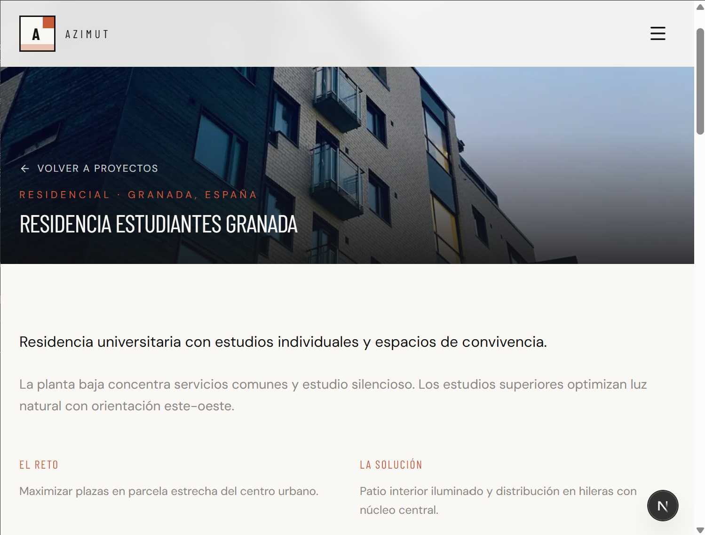

Contexto
Azimut Estructuras es un proyecto de portfolio que simula la presencia digital de un estudio boutique de arquitectura modular y construcción sostenible en España. No es un template genérico de agencia: es un recorrido completo de marca, desde la primera impresión hasta la conversión, pensado para demostrar criterio en diseño, experiencia de usuario y desarrollo frontend.
La premisa del proyecto era responder a una pregunta concreta: ¿cómo debería sentirse en la web un estudio de construcción premium que vende precisión, materiales nobles y compromiso ambiental? El resultado es un sitio corporativo ficticio pero creíble, con contenido coherente, estética propia y una arquitectura técnica sólida detrás.
